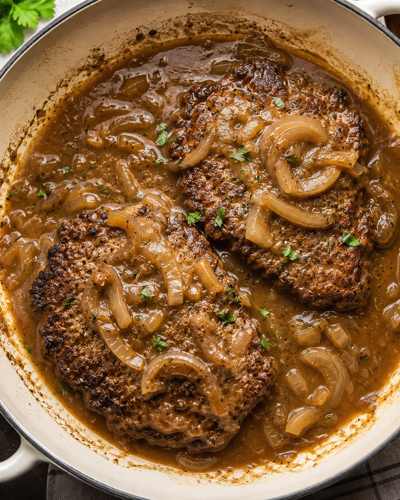

Cube Steak

Home
Description
This is a simple recipe for cube steak, which is comprised of various herbs, spices, gravy, and beef.
The proportions and measurements used here are meant to serve 2 people, but feel free to adjust the recipe to best fit your needs!
(Culinary Reference: Tad = 1/4 tsp. Dash = 1/8 tsp. Pinch = 1/16 tsp.)
Ingredients
Meat and Vegetables
- 2 cube steaks
- Half a large yellow onion, slice into half inch strips
Fats and Coating
- 1 and a half tbsp of all-purpose flour
- 1 tbsp of olive oil
- 1 and a half tbsp of unsalted butter
Spices and Blends
- Half a tsp of brown sugar
- Dash of black pepper
- Tad of seasoned salt
- Tad of garlic powder
- Tad of onion powder
- Tad of chili powder
- Tad of paprika
Gravy Sauce
- 1 tbsp of cornstarch
- 1 cup of reduced-sodium beef broth (adjust for salt after tasting)
- Half a tsp of onion powder
- Tad of garlic powder
- 1 tsp of Worcestershire sauce